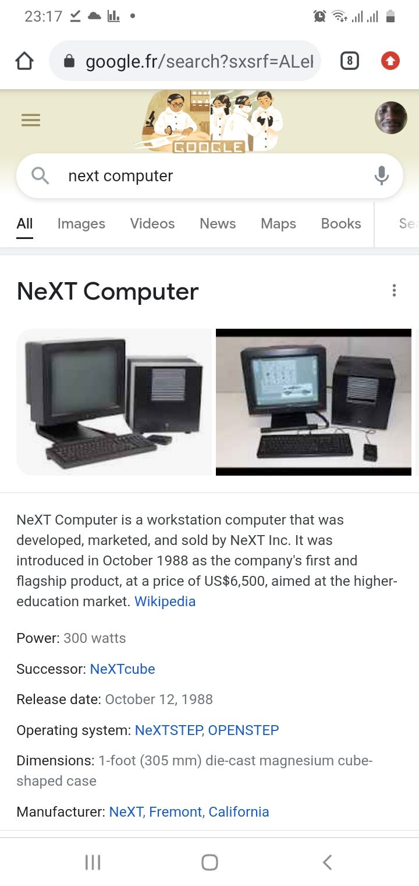
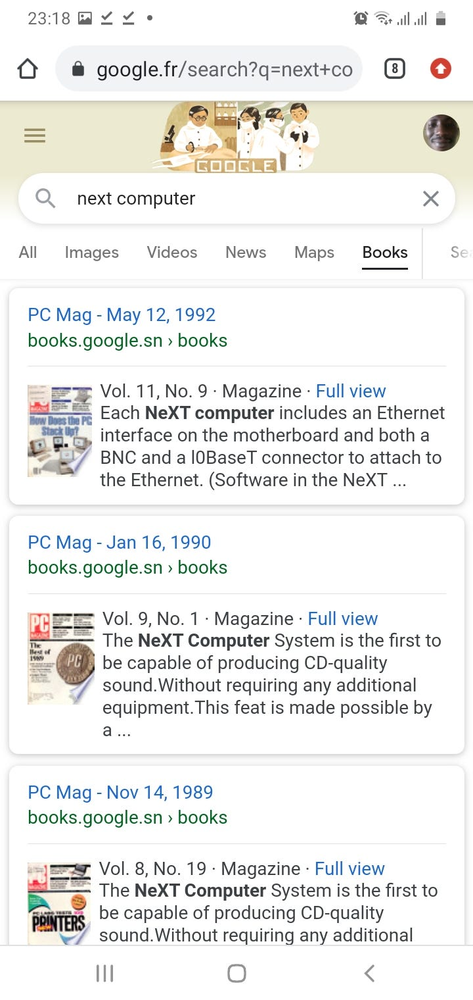
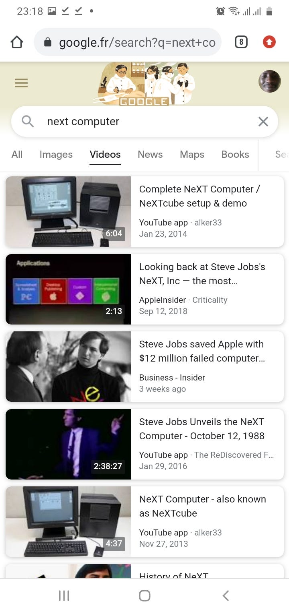
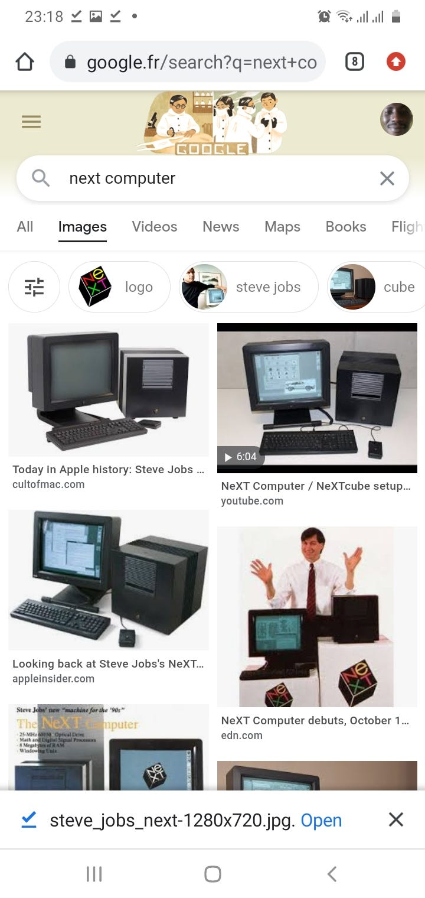

Mar 10, 2021
Pascal notation and multiword domain names
If you have a multi-word domain name like trustyourself.com, you better have to write it like this TrustYourSelf.com because you will be helping the reader’s mind goes from word to word way before he or she starts reading each one of these words that stand here in front of her or his eyes. Software engineers use this form of writing for naming variables, functions, or classes. This notation is either Camel Case or Pascal. The main goal of these artifacts is to make reading and memorization (not memoization) easy for the next users, developers, engineers, readers, marketers who will be in front of the writing. remember that Art is a tool that gives us the ability to create new things and to makes things better on behalf of those who will use it to create the next thing. By writing multiword domain names like this you will make it easier for others to capture them faster and build with them the Next things



